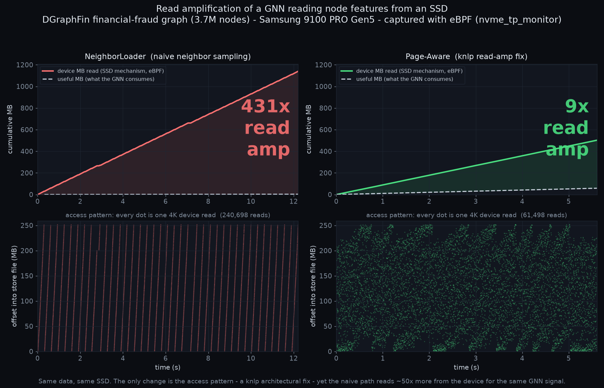

01The gap between two witnesses
Every storage workload has two witnesses to the same events, and neither tells the whole truth alone. The application knows intent — "these 2.6 MB of node features are what I actually consume." The device knows mechanism — "1140 MB of 4 KiB pages crossed the PCIe bus." Read amplification is the gap between them.
A GNN that offloads node features to an SSD is the textbook case. Each feature vector is 17 floats — 68 bytes. But storage is paged: a single scattered neighbor drags a whole 4 KiB page for that 68 bytes. Sample a batch of neighbors that land on 240,000 different pages and the device moves a gigabyte to feed a workload that consumes a couple of megabytes. The in-RAM counter can model this; eBPF at the nvme tracepoints proves it — and here the device-side count matched the store's own read count to the command (240,698 vs 240,698 reads).
◱intent witness
The driver emits its useful
feature bytes on a CLOCK_MONOTONIC axis — what the GNN actually consumes.
▣mechanism witness
nvme_tp_monitor
records every request built and completed by the Linux NVMe driver on the same clock — slba, bytes, completion latency. No
user_data needed; this is plain O_DIRECT block IO.
⚲the gap is the story
Lay the two on one timeline and the read amplification is not a statistic — it is the visible distance between two curves.
read() or io_uring_enter() calls with this command count. Filesystems
and the block layer may split, merge, or reorder requests, and one io_uring_enter()
can submit many SQEs. nvme_tp_monitor hooks nvme_setup_cmd and
nvme_complete_rq once per Linux-driver request and completion. It is not a PCIe bus
analyzer and does not observe firmware, FTL, or NAND work.02The A/B: naive access vs the architectural fix
The same features, the same SSD, the same 3.7M-node graph. The only thing that changes is the
access pattern. NeighborLoader samples neighbors and reads each one's
page individually. Page-Aware batching — a knlp engineering fix — reads pages
whole and uses every node on them. That change reduces RA_signal about 50×,
device bytes about 2.3×, and command count about 3.9×. Keep those numbers separate because
the page-aware arm also consumes more useful feature bytes. The method applies when useful
records are smaller than their storage units; it does not claim every workload has this shape.

| arm | useful (intent) | device read (eBPF) | RA_signal | RA_fetch |
|---|---|---|---|---|
| NeighborLoader — naive neighbor sampling | 2.65 MB | 1140 MB · 240,698 reads | 431× | ~57× |
| Page-Aware — knlp read-amp fix | 58.3 MB | 502 MB · 61,498 reads | 8.6× | ~2× |
RA_signal = device bytes / useful feature bytes (vs what the model
consumes). RA_fetch = device bytes / minimal pages needed (the store's own
ra_physical: the page-granularity tax even after you account for necessary paging).
Both are honest; RA_signal is the end-to-end number a workload actually pays.
03What the Perfetto timeline shows
Drag gnn_readamp_dgraphfin_ab.pftrace.gz onto
ui.perfetto.dev (local WASM; nothing uploads). Each arm is a
process group rebased to t=0, so naive and page-aware sit side by side. Per arm:
| counter | what it shows |
|---|---|
| useful MB (intent) | the feature bytes the GNN consumes — the denominator of read amplification |
| device MB, store count | the store's own read accounting (intent side) |
| device MB, eBPF | the independent device-side truth — it tracks the store count, which is the capture verifying itself |
| read amplification × | device MB / useful MB, running: 431× vs 8.6× |
| device LBA (sector) | slba over time — the access pattern: scatter for poor locality, banded for good |
The useful curve sitting far below device is the amplification. The two device curves coinciding is the honesty check: the eBPF witness and the application's self-report agree, so the huge number is not an artifact of either one.
04Capture a confidential workload without capturing payloads
This is why the capture matters beyond a pretty chart. A device capture — and the fio iolog made from it — carries only IO shape: operation, offset, length, timing. This path records no feature values, node IDs, graph contents, or keys.
An operator can therefore run a confidential GNN — real financial-fraud data
or a private customer graph — and reproduce its device-request shape without putting payload
bytes in the capture. The current capture and replay bundle remain confidential operational
metadata; they are for bank-local use or a separately reviewed controlled transfer, not
automatic publication. mk_dev_iolog.py turns the capture into a fio v3 request
stream and certifies its ordered operation, offset, and length translation:
fio version 3 iolog
0 /dev/nvme0n1 add
0 /dev/nvme0n1 open
0 /dev/nvme0n1 read 3451445895168 4096
0 /dev/nvme0n1 read 3451445907456 4096
0 /dev/nvme0n1 read 3451445919744 4096
... 240,695 more reads: offset + length + time only ...Replayed read-only with fio --read_iolog --direct=1 and refereed against the
original capture by the old compare_streams.py, the historical run had the following
aggregate agreement:
| commands | bytes | size mix | |
|---|---|---|---|
| original capture | 240,698 | 1140 MB | 4K:208136 8K:28196 12K:3749 |
| replay from iolog | 240,702 | 1140 MB | 4K:208138 8K:28198 12K:3749 |
| rounded delta | +0.0% | +0.0% | nearly identical counts |
This aggregate result did not establish identical ordered offsets. It shows why a payload-free request-shape artifact is useful, and why the fixed pipeline now checks more than counts and histograms.
nvme_uring_cmd_monitor --kv
is a different capture path and records key_hex. The current fio bundle also
preserves exact placement and timing and includes a source-capture digest. It is a fidelity
artifact, not a release package. Review and minimize every artifact before a controlled
transfer. kvio can build a bounded results-only draft, but a trace-release format and release
authorization remain open work in tools/kvio/TODO.md.05Reproduce it
Full recipe in tools/reproduce/gnn-readamp/. The shape of it:
# 1. capture both arms at the device layer (knlp force-SSD store, O_DIRECT)
./cap_ssd.sh neighbor natural 12 /tmp/nbr
./cap_ssd.sh page natural 12 /tmp/page
# 2. A/B onto one Perfetto timeline
python3 examples/replay/readamp2perfetto.py \
--arm "NeighborLoader (naive):/tmp/nbr.jsonl:/tmp/nbr.phase.txt" \
--arm "Page-Aware (knlp fix):/tmp/page.jsonl:/tmp/page.phase.txt" \
-o gnn_readamp_ab.pftrace
# 3. payload-free replay bundle + independent static check
./kvio iolog /tmp/nbr_reads.jsonl /dev/source --bundle-dir nbr-replay
./kvio fio-certify nbr-replay
# 4. run read-only, capture again, and grade runtime fidelity
sudo ./kvio record --disk nvme0n1 --dur 60 --jsonl /tmp/replay.jsonl &
sleep 1
sudo KVIO_TARGET=/dev/nvme0n1 fio nbr-replay/replay-block.fio
./kvio compare dgraphfin:/tmp/nbr_reads.jsonl:/tmp/replay.jsonl06Where the pieces live
Two trees, one boundary. The tools and this value showcase live in ebpf-syscall; the ready-to-view demo trace lives in the gallery as a data artifact.
- ebpf-syscall — the tracer (
nvme_tp_monitor), the converter (examples/replay/readamp2perfetto.py), the replay tools (mk_dev_iolog.py,compare_streams.py), the reproduce recipe (tools/reproduce/gnn-readamp/), and this page. - kvio-perfetto-gallery — the draggable
traces/gnn_readamp_dgraphfin_ab.pftrace.gzplus its figure and machine-readable report. A demo artifact; it links back here for the story.